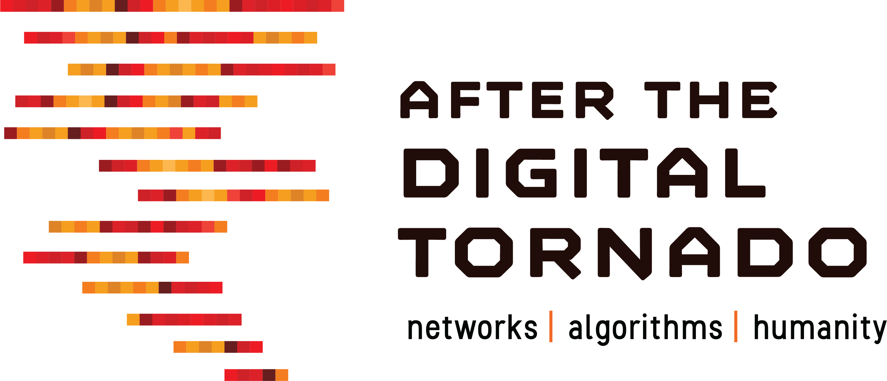

Networks powered by algorithms are eating everything. Many of the contemporary technology trends with the greatest significance for the economy and for public policy—Internet of Things, Big Data, Platform Economy, Blockchain, and Algorithmic Society—should be seen as manifestations of this larger phenomenon.
Growing tensions around governance, innovation, surveillance, competition, consumer/worker protection, privacy, and discrimination are best understood within a broader frame. The algorithmic networked world poses deep questions about power, freedom, fairness, and human agency.
Ubiquitous networking means the transformation of every form of economic activity along the same lines as the internet. Algorithmic control means that increasingly dynamic software will manage not just transactions and communication, but also human systems.
Our cultures and institutions are not well-adapted to this new environment. A distinguished interdisciplinary group of scholars considered the challenges and opportunities as the physical and digital worlds merge.
In 1997, the U.S. Federal Communications Commission published Kevin Werbach's working paper, Digital Tornado, one of the first examinations by a government agency of the transformative potential of the internet.
Twenty years later, little remains untouched by the wave of digital connectivity. Yet fundamental questions remain unresolved, and even more serious new questions have emerged.
Edited by Kevin Werbach
The conference resulted in an edited volume published by Cambridge University Press in 2020. Contributors include leading scholars in law, policy, technology, and business examining how algorithmic networks are reshaping society.
View at Cambridge University PressThe network is the basic organizing structure of our increasingly digital society. This section considers how private and governmental actors seek to exploit the networked environment, and what mechanisms could promote the most desirable outcomes.
As more and more decisions are automated through analytics that substitute correlations for causation and understanding, foundational notions of fairness and responsibility come into question.
What is the future for people in an environment increasingly dominated by data-driven algorithms and connected machines? Can we find solutions that promote human flourishing?
Kevin Werbach is Professor of Legal Studies and Business Ethics at the Wharton School of the University of Pennsylvania. He is the author of The Blockchain and the New Architecture of Trust (MIT Press, 2018) and co-author of For the Win: How Game Thinking Can Revolutionize Your Business. Over 400,000 students have enrolled in his Coursera massive open online course. Previously he served as Counsel for New Technology Policy at the FCC, where he wrote Digital Tornado, the first comprehensive analysis of the internet's implications for communications policy.